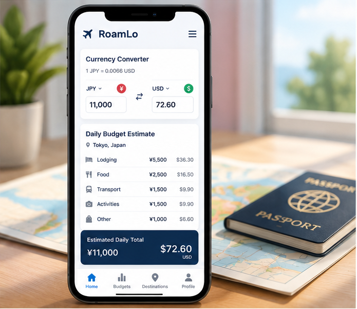

RoamLo uses estimated daily spending to give travelers an idea of what different destinations may cost. Each budget combines common travel expenses such as lodging, food, transportation, and activities while showing the total in both local currency and U.S. dollars.
The current estimates are sample values that demonstrate how RoamLo's budgeting system will work. As the project develops, these fixed numbers can be replaced with live exchange rates and more detailed destination data.
Future versions will allow travelers to adjust factors such as trip length, destination, and spending style. RoamLo will then calculate a more personalized daily and total trip budget based on those choices.
What Goes Into a RoamLo Budget
- Estimated lodging costs based on the selected destination
- Typical daily spending for food and local transportation
- Estimated activity and entertainment expenses
- Costs displayed in both local currency and U.S. dollars
- Future support for personalized budgets and live exchange rates
Sample Trip Budgets
| Destination | Local Currency | Est. Daily Cost (Local) | Est. Daily Cost (USD) | Typical Trip Length |
|---|---|---|---|---|
| Tokyo, Japan | JPY (¥) | ¥11,000 | ~$73 | 7–10 days |
| Seoul, South Korea | KRW (₩) | ₩85,000 | ~$62 | 5–7 days |
| Amsterdam, Netherlands | EUR (€) | €95 | ~$102 | 4–6 days |
| Santo Domingo, Dominican Republic | DOP (RD$) | RD$3,700 | ~$63 | 5–7 days |